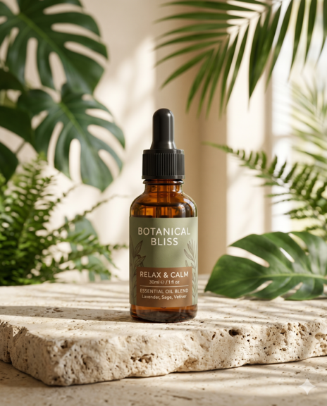
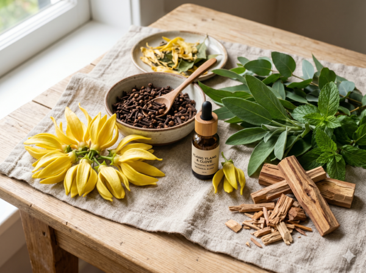
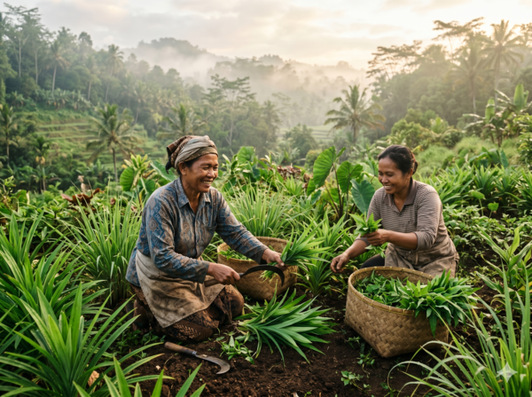
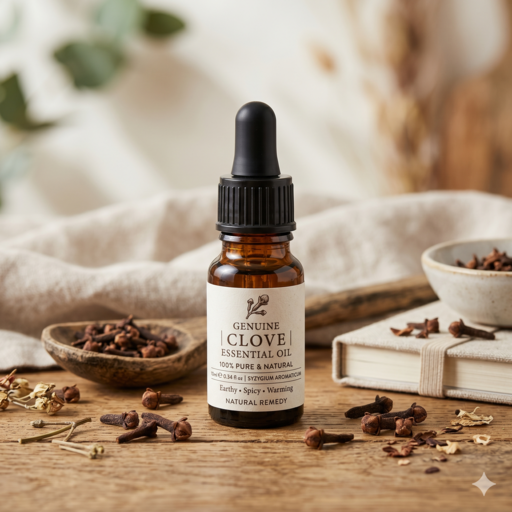
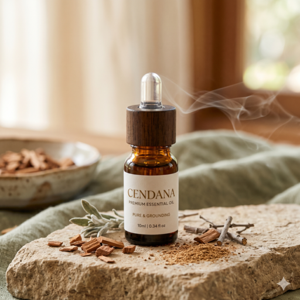

Kembali ke Alam
100% minyak atsiri murni hasil distilasi uap dari perkebunan lokal Indonesia. Didesain khusus untuk relaksasi mendalam, meredakan stres, dan meningkatkan kualitas tidur.

Kami menjaga kualitas alam dari panen hingga ke tangan Anda.

Tanpa bahan kimia buatan, tanpa pengencer. Kami hanya menggunakan proses ekstraksi cold-press dan distilasi uap yang terjaga suhunya untuk mempertahankan senyawa aktif penyembuh dari tanaman.

Kami bermitra langsung dengan petani-petani lokal Nusantara. Dengan membeli produk kami, Anda turut serta menyejahterakan komunitas agrikultur Indonesia dan menjaga kelestarian alam.

Meredakan nyeri otot & pegal linu setelah aktivitas panjang.

Relaksasi mendalam & meningkatkan fokus saat meditasi/yoga.
3-5 tetes ke diffuser
Tarik napas perlahan
Nikmati ketenangan
"Semenjak pakai varian Kenanga, tidur saya jadi jauh lebih nyenyak. Wanginya sangat natural, tidak bikin pusing seperti merk kimia."
- Sarah, Karyawan Swasta
"Cendana-nya luar biasa! Saya sering kesulitan fokus saat meditasi karena pikiran ke mana-mana. Aromanya sangat earthy dan grounding. Benar-benar sesuai tagline 'Kembali ke Alam'."
- Budi, Instruktur Yoga
"Varian Cengkeh menyelamatkan punggung saya setelah duduk depan laptop 8 jam sehari. Dicampur carrier oil, panasnya pas dan meresap cepat."
- Dina, Freelancer